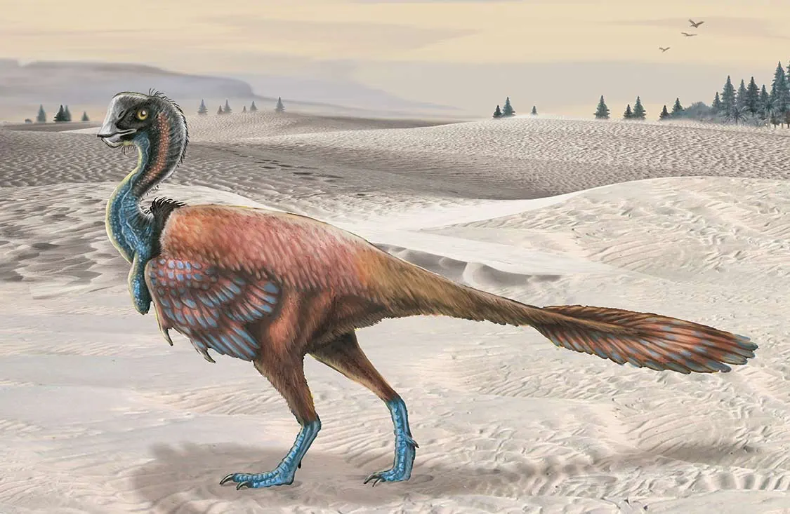
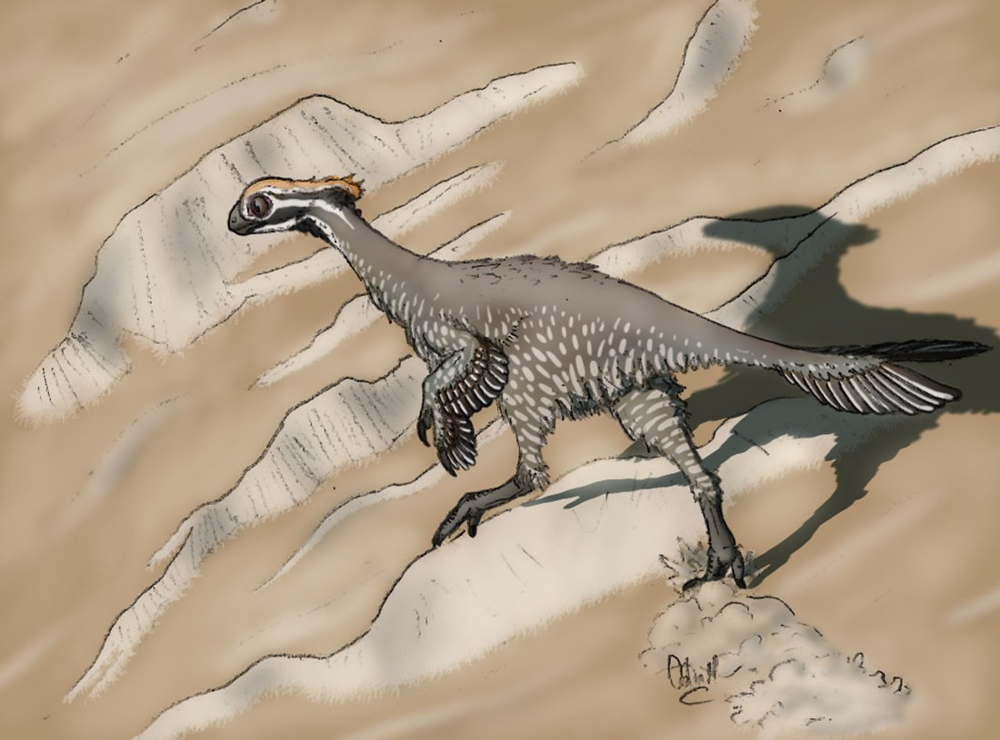

Oviraptor (lit. 'egg thief') is a genus of oviraptorid dinosaur that lived in Asia during the Late Cretaceous period. The first remains were collected from the Djadokhta Formation of Mongolia in 1923 during a paleontological expedition led by Roy Chapman Andrews, and in the following year the genus and type species Oviraptor philoceratops were named by Henry Fairfield Osborn. The genus name refers to the initial thought of egg-stealing habits, and the specific name was intended to reinforce this view indicating a preference over ceratopsian eggs. Despite the fact that numerous specimens have been referred to the genus, Oviraptor is only known from a single partial skeleton regarded as the holotype, as well as a nest of about fifteen eggs and several small fragments from a juvenile. 
Avimimus, meaning "bird mimic" (Latin avis = bird + mimus = mimic), is a genus of oviraptorosaurian theropod dinosaur, named for its bird-like characteristics, that lived in the late Cretaceous in what is now Mongolia, around 85 to 70 million years ago. Avimimus was a small, bird-like dinosaur with a length of 1.5 m (5 ft).[1] The skull was small compared to the body, though the brain[1] and eyes were large. The size of the bones which surrounded the brain and were dedicated to protecting it are large.[1] This is also consistent with the hypothesis that Avimimus had a proportionally large brain. 